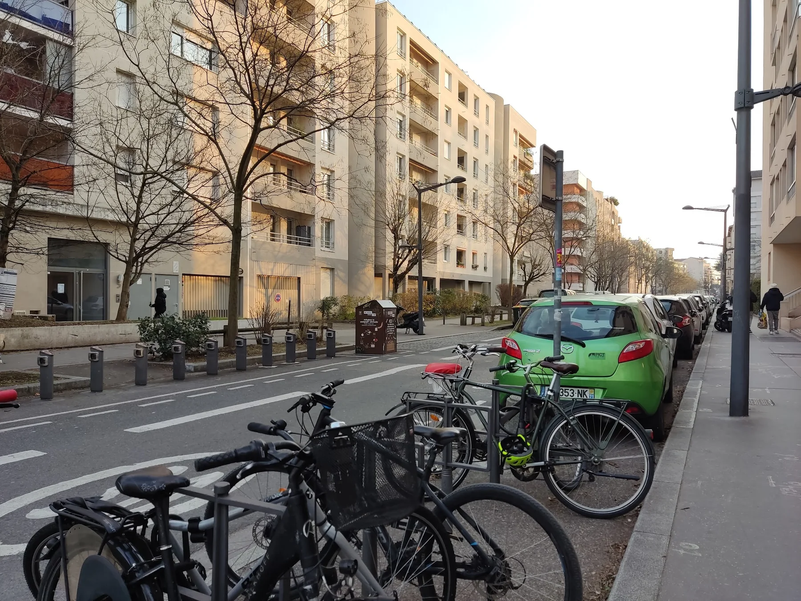

Infos pratiquesUne visite ?
Une visite ?
Un livre à réserver ?
Retrouvez les horaires, les accès et les coordonnées de la librairie. Pour une réservation d'ouvrage, vous pouvez appeler ou écrire directement à l'équipe.
Librairie L'Esprit Livre
76 rue du Dauphiné
69003 Lyon
04 72 91 69 50
contact@lesprit-livre.fr
- LundiFermé
- Mardi10h–13h / 14h–19h
- Mercredi10h–13h / 14h–19h
- Jeudi10h–13h / 14h–19h
- Vendredi10h–13h / 14h–19h
- Samedi10h–19h
- DimancheFermé

Venir à la librairie
Plusieurs accès possibles
TramT3 — arrêt « Dauphiné Lacassagne ».
MétroLigne D — arrêt « Monplaisir – Sans souci ».
BusLignes 25, 69, C13 et C16.
Vélo'vUne station en face de la librairie et deux autres à proximité.
Réserver un ouvrage
Donnez-nous le titre et l'auteur.
La librairie peut vous renseigner par téléphone ou par email sur un ouvrage, sa disponibilité ou sa commande. Aucun formulaire de démonstration n'envoie de données.
FAQ
Avant votre visite
Quels types de livres trouve-t-on à L'Esprit Livre ?
La librairie est généraliste : littérature française et étrangère, jeunesse, polar, science-fiction et fantasy, bandes dessinées et mangas, sciences humaines, scolaire et parascolaire, développement personnel, livres pratiques, beaux livres et littérature en langues étrangères. Elle propose aussi des jeux éducatifs, des cartes et des articles de loisirs créatifs.
Peut-on commander un ouvrage qui n'est pas en rayon ?
Oui, les informations publiques de la librairie et les avis clients indiquent qu'il est possible de commander des ouvrages. Le plus simple est d'appeler le 04 72 91 69 50 ou d'écrire à contact@lesprit-livre.fr avec le titre et l'auteur.
Comment réserver un livre ?
Vous pouvez contacter directement la librairie par téléphone ou par email. Pour faciliter la demande, indiquez le titre exact, l'auteur et vos coordonnées de retour.
Quels sont les horaires du samedi ?
Le samedi, la librairie est ouverte de 10h à 19h sans interruption.
La librairie organise-t-elle des événements ?
Oui. Son actualité récente comprend des rencontres, dédicaces, lectures jeunesse, ateliers philo et participations à des événements littéraires. Les dates évoluent au fil de l'année.
Comment venir en transports en commun ?
La librairie est notamment accessible par le tram T3 (arrêt « Dauphiné Lacassagne »), le métro D (arrêt « Monplaisir – Sans souci ») et les lignes de bus 25, 69, C13 et C16.